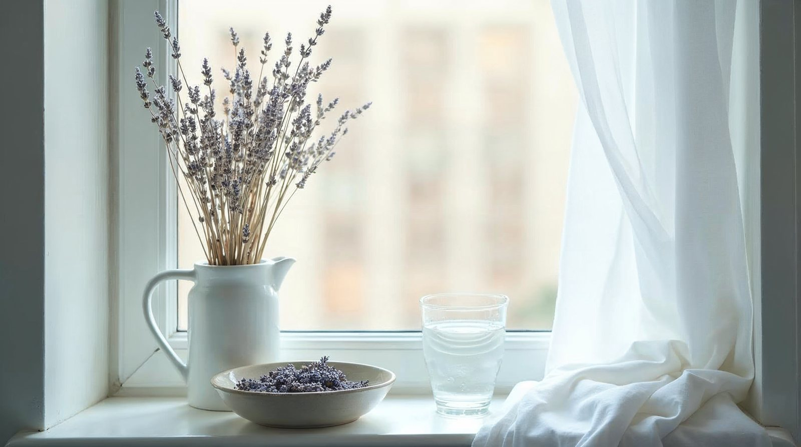
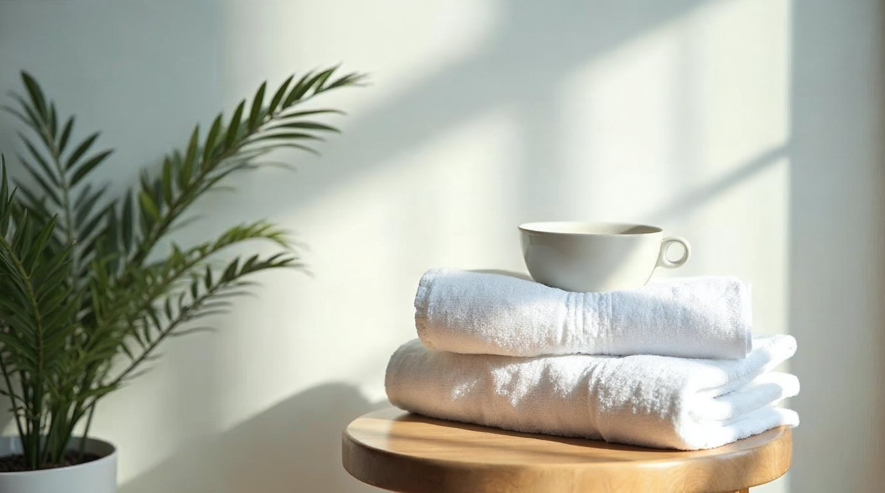
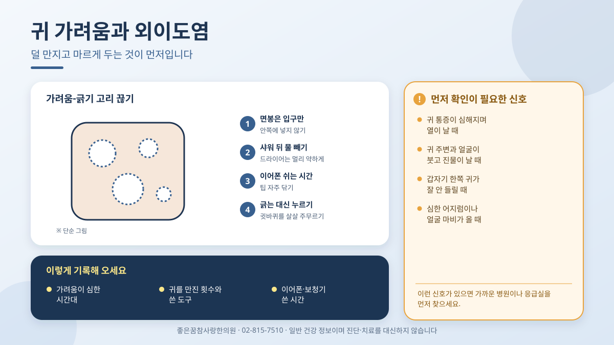

이종호 한의사 감수좋은꿈참사랑한의원 대표원장 (한의사 면허번호 19769)발행 2026-11-26 · 수정 2026-11-27
이 글의 차례
샤워를 하고 나와 수건으로 머리를 말리다 보면 귀 안이 간질간질해요. 면봉을 하나 꺼내 살살 돌리면 그 순간은 시원한데, 한 시간쯤 지나면 다시 가렵습니다. 밤에 누워서도 손가락이 저절로 귀로 가죠. 이런 날이 몇 주째 이어지면 귀 안이 따끔거리고 진물이 묻어나기도 해요.
진료실에서 귀 가려움을 말씀하시는 분께 저는 하루에 귀를 몇 번 만지시는지부터 여쭤요. 대부분 처음엔 "거의 안 만져요"라고 하시다가, 곰곰이 생각해 보시고는 "면봉은 매일 써요"라고 하세요. 그게 이상한 게 아니에요. 원래 그래요. 습관이 된 손길은 본인도 잘 못 느끼거든요.
귀 입구에서 고막까지 이어진 통로를 외이도라고 해요. 이 통로의 피부는 얇고 예민해서, 자주 긁거나 물기가 오래 남으면 쉽게 염증이 생겨요. 이걸 외이도염이라고 부르고, 가려움이 주된 불편이 되는 경우가 많아요.
그러니까 사실은 두 개가 다른 얘기예요. '귀를 깨끗하게 하는 것'과 '귀를 편하게 두는 것'이요. 귀는 스스로 귀지를 밀어내며 청소하는 기관이라, 깨끗하게 하려는 손길이 오히려 얇은 피부를 긁어 가려움을 키우는 경우가 많거든요. 마치 딱지를 자꾸 떼면 상처가 아물 틈이 없는 것과 비슷해요.
이 글에서는 귀 가려움이 되풀이되는 이유, 외이도염과 귀 습진, 귀지 문제의 차이, 귀를 덜 건드리는 생활 습관, 그리고 한의원에서 함께 살피는 부분을 정리해 볼게요.

외이도는 어떤 곳인가요
외이도는 길이가 2.5cm 남짓한 작은 통로입니다. 바깥쪽 절반은 연골로, 안쪽 절반은 뼈로 둘러싸여 있고, 그 위를 아주 얇은 피부가 덮고 있습니다. 특히 안쪽의 피부는 종이처럼 얇아서 작은 상처에도 쉽게 다칩니다.
외이도 바깥쪽에는 귀지를 만드는 샘이 있습니다. 귀지는 지저분한 찌꺼기가 아니라, 피부를 촉촉하게 지키고 세균과 물을 막아 주는 보호막입니다. 또 귀는 스스로 청소하는 기관이라, 귀지는 턱을 움직일 때마다 조금씩 바깥으로 밀려 나옵니다.
그래서 건강한 귀는 따로 파내지 않아도 대부분 괜찮습니다. 오히려 자꾸 파내면 피부를 지키던 보호막이 벗겨지고, 남은 귀지가 안쪽으로 밀려 들어가 뭉치기도 합니다.
귀 가려움은 어떤 모양으로 나타나나요
귀 가려움과 함께 흔히 말씀하시는 불편은 이렇습니다. 어떤 것이 함께 있는지에 따라 살필 방향이 조금씩 달라집니다.
- 귀 안이 간질간질하고 자꾸 만지고 싶음
- 귀 입구 주변 피부가 붉고 하얀 각질이 일어남
- 귀를 당기거나 귀 앞을 누르면 아프고 씹을 때도 불편함
- 귀에서 물 같은 진물이나 냄새 나는 분비물이 나옴
- 귀가 꽉 찬 느낌이나 소리가 조금 먹먹함
- 귀 뒤나 두피, 얼굴에도 가려움과 각질이 있음
귓바퀴를 당기거나 귀 앞의 작은 돌기를 눌렀을 때 아프다면 외이도 피부에 염증이 생긴 경우가 많습니다. 중이염은 귀 깊은 곳이 아프고 귀를 당겨도 통증이 크게 변하지 않는 편이라 구분에 도움이 됩니다.
왜 귀 가려움은 자꾸 반복될까요
가장 흔한 이유는 '가려움-긁기-더 가려움'의 고리입니다. 가려워서 면봉이나 손가락으로 긁으면 얇은 피부에 작은 상처가 생기고, 상처가 아물면서 다시 가렵습니다. 긁을 때 귀지 보호막까지 벗겨져 피부는 더 마르고 예민해집니다.
두 번째는 물기입니다. 샤워나 수영 뒤 귀 안에 물이 남아 있으면 피부가 불어 약해지고 세균과 곰팡이가 자라기 쉬워집니다. 여름철, 수영을 즐기는 분, 습한 곳에서 일하는 분에게 외이도염이 많은 이유입니다.
세 번째는 귀를 막는 물건입니다. 이어폰, 귀마개, 보청기를 오래 끼고 있으면 귀 안이 덥고 습해지며 바람이 통하지 않습니다. 이어폰 팁에 묻은 땀과 피지가 피부를 자극하기도 합니다.
네 번째는 피부 자체의 체질입니다. 지루성 피부염, 아토피 피부염, 건선처럼 피부가 예민한 분은 귀 안과 귀 주변에도 같은 변화가 오기 쉽습니다. 두피나 눈썹, 코 옆에 각질과 가려움이 함께 있다면 귀도 그 연장선에서 보시는 것이 좋습니다.
한의학에서는 이런 가려움을 피부가 마르고 열이 머무는 모습, 또는 습한 기운이 고여 있는 모습으로 나누어 보기도 합니다. 진물이 많은지, 각질이 많은지에 따라 살피는 방향이 달라집니다. 같은 가려움이라도 마른 쪽과 젖은 쪽은 생활에서 신경 쓸 부분이 다르기 때문입니다.
외이도염, 귀 습진, 귀지 문제는 어떻게 다른가요
외이도염은 외이도 피부에 염증이 생긴 상태입니다. 가려움으로 시작해 통증, 붓기, 진물로 이어질 수 있고, 귀를 당기면 아픈 것이 특징입니다. 세균이나 곰팡이가 원인이 되는 경우도 있어 이비인후과에서 귀 안을 보고 약을 정합니다.
귀 습진은 염증이라기보다 피부가 예민해져 가렵고 각질이 일어나는 상태에 가깝습니다. 통증은 적고 가려움이 오래가며, 귀 입구와 귀 뒤, 두피 경계에 비슷한 각질이 함께 보이는 경우가 많습니다.
귀지가 뭉쳐 귀를 막으면 가려움보다는 꽉 찬 느낌, 소리가 작게 들리는 느낌이 앞섭니다. 이 경우에는 집에서 파내려 하지 말고 이비인후과에서 안전하게 빼는 것이 좋습니다. 잘못 건드리면 더 깊이 밀려 들어갈 수 있습니다.
면봉은 아예 쓰지 말아야 하나요?
면봉은 귀 입구와 귓바퀴의 물기를 살짝 닦는 정도로만 쓰시길 권합니다. 외이도 안쪽 깊이 넣어 돌리는 습관은 귀지를 밀어 넣고 얇은 피부에 상처를 내기 쉽습니다. 귀이개나 머리핀, 손톱으로 긁는 것은 더 큰 상처를 낼 수 있습니다.
가려움이 심해 견디기 어려울 때는 귀 입구 바깥을 손가락으로 가볍게 눌러 주거나, 귓바퀴를 살살 주물러 보세요. 긁지 않고 누르는 것만으로도 가려운 느낌이 조금 누그러지는 경우가 많습니다.
보청기나 귀마개를 매일 쓰는 분이라면
보청기를 쓰시는 분은 하루 대부분 귀 안이 막혀 있어 땀과 습기가 차기 쉽습니다. 잠들기 전에는 보청기를 빼서 귀를 쉬게 하고, 보청기 겉면을 마른 천으로 닦아 주세요. 가려움이 계속되면 보청기를 맞춘 곳에 귀꽂이 모양이 맞는지 함께 확인해 보시면 좋습니다.
소음 때문에 일할 때 귀마개를 끼는 분도 비슷합니다. 일회용 귀마개는 한 번 쓰고 바꾸고, 다시 쓰는 귀마개는 매일 씻어 말려 쓰시길 권합니다. 손에 묻은 먼지와 기름이 귀마개를 통해 귀 안으로 들어가기 쉽습니다.
아이와 어르신의 귀 가려움
아이는 귀를 만지는 이유를 말로 잘 설명하지 못합니다. 아이가 자꾸 귀를 잡아당기거나 비비면 가려움일 수도 있지만 중이염의 통증일 수도 있으니, 열이나 보챔이 함께 있다면 소아청소년과나 이비인후과에서 확인해 주세요.
어르신은 나이가 들면서 귀지가 마르고 단단해지며 외이도 피부도 얇아져 가려움이 늘어나는 경우가 많습니다. 이때 귀이개로 파내는 습관이 상처를 만들기 쉬우니, 가려움이 심하면 진료실에서 상의해 주세요.
마음이 긴장할 때 귀를 만지는 습관
생각에 잠기거나 긴장할 때 무의식중에 귀를 만지는 분이 계십니다. 회의 중이나 공부할 때, 운전 중에 손이 귀로 가는 버릇이 있다면 그 시간이 가려움을 키우고 있을 수 있습니다.
이런 습관은 억지로 참기보다 손에 다른 할 일을 주는 편이 수월합니다. 펜을 쥐거나 손바닥을 마주 비비는 것처럼, 귀 대신 손이 갈 곳을 정해 두면 횟수가 줄어드는 것을 느끼실 수 있습니다.
귀에 넣는 민간요법은 조심해 주세요
가려움을 달래려고 귀에 오일, 식초, 알코올, 과산화수소 같은 것을 넣어 보시는 분이 계십니다. 외이도 피부에 상처가 있거나 고막에 문제가 있는 경우에는 이런 것들이 오히려 자극이 될 수 있습니다.
귀 안에 무언가를 넣기 전에는 이비인후과에서 귀 안 상태를 먼저 확인하고 안내받으시길 권합니다. 귀 촛불처럼 귀 안에 열을 가하는 방법도 화상과 이물의 위험이 있어 권하지 않습니다.
먼저 이렇게 여쭙니다
처음 오시면 대략 이런 순서로 여쭙니다. 미리 떠올려 오시면 이야기가 훨씬 수월합니다.
- 가려움은 언제부터, 한쪽인가요 양쪽인가요?
- 면봉, 귀이개, 손가락으로 하루에 몇 번 정도 만지시나요?
- 이어폰이나 보청기를 하루 몇 시간 쓰시나요?
- 샤워나 수영 뒤 귀의 물기는 어떻게 말리시나요?
- 두피, 얼굴, 몸의 다른 곳에도 가려움이나 각질이 있나요?
- 이비인후과에서 받은 귀약이나 연고가 있나요?
잠과 긴장의 정도도 함께 여쭙니다. 피곤하고 스트레스가 많은 시기에 가려움이 심해지고, 밤에 무의식중에 긁는 일이 늘어나는 분이 많기 때문입니다. 식사와 술, 매운 음식의 습관도 가볍게 여쭙습니다.
일상에서 먼저 해 볼 수 있는 것
귀 가려움 관리의 핵심은 '덜 건드리고, 마르게 두는 것'입니다.
- 면봉은 귀 입구 물기만 살짝, 안쪽은 넣지 않기
- 샤워 뒤 고개를 기울여 물을 빼고, 드라이어는 멀리서 약한 바람으로
- 이어폰은 쉬는 시간을 두고, 팁은 자주 닦기
- 머리를 감을 때 샴푸와 린스가 귀에 남지 않게 헹구기
- 손톱을 짧게 다듬어 무의식중의 긁기 줄이기
- 귀가 가려울 때 긁는 대신 귓바퀴를 눌러 주기
드라이어를 쓸 때는 귀에서 한 뼘 이상 떨어뜨리고 미지근하거나 시원한 바람으로 짧게 말려 주세요. 뜨거운 바람을 가까이 대면 오히려 피부가 더 마르고 가려워질 수 있습니다.
수영을 자주 하신다면 물이 잘 들어가지 않는 수영용 귀마개를 쓰고, 수영 뒤에는 고개를 좌우로 기울여 물을 빼 주세요. 귀마개도 쓰고 나서 잘 씻어 말려야 합니다.
귀 가려움과 함께 보는 몸의 흐름
귀 가려움이 심한 시기를 돌아보면 잠이 부족하고, 맵고 기름진 음식이나 술이 잦고, 피부 전체가 건조했던 때와 겹치는 경우가 많습니다. 귀만 따로 떼어 보기보다 몸 전체의 흐름 속에서 보면 원인의 실마리가 잡힙니다.
겨울에는 난방으로 피부 전체가 마르면서 귀 안도 건조해져 가렵고, 여름에는 땀과 습기로 진물형 가려움이 늘어납니다. 같은 귀 가려움이라도 계절에 따라 관리 방법이 조금씩 달라지는 이유입니다. 겨울에는 귀 주변 피부의 보습을, 여름에는 물기와 땀을 말리는 쪽에 무게를 두시면 됩니다.
한의원에서 함께 살필 수 있는 경우
- 이비인후과 치료 뒤에도 귀 가려움이 자꾸 돌아오는 경우
- 두피, 얼굴, 귀에 함께 각질과 가려움이 있는 경우
- 피곤하거나 긴장한 시기마다 귀 가려움이 심해지는 경우
- 밤에 무의식중에 귀를 긁어 잠을 설치는 경우
좋은꿈참사랑한의원에서는 모든 분의 맥을 먼저 짚고, 아래 '먼저 확인이 필요한' 신호가 없는지 봅니다. 그다음 혀와 피부의 건조함과 열감, 잠과 소화, 긴장의 흐름을 살펴 가려움이 반복되는 몸의 바탕을 함께 정리합니다.
진찰한 내용을 바탕으로 귀를 덜 건드리는 습관 하나와 함께 침, 한약 상담 가운데 지금 상태에 맞는 것을 정합니다. 한약을 상의할 때는 드시는 약과 바르는 약을 모두 확인하고 신중히 정합니다.
이비인후과에서 처방받은 귀약이나 연고는 처방대로 쓰시고, 멈추는 시점은 처방한 선생님과 상의하세요. 귀 안에 염증이 있는 상태는 이비인후과에서 직접 보고 치료하는 것이 먼저이고, 한의원은 그 곁에서 몸의 흐름을 함께 살핍니다.

이렇게 기록해 오시면 상담이 쉬워집니다
귀 가려움은 언제, 무엇과 함께 심해지는지가 중요한 단서가 됩니다. 2주 정도만 간단히 적어 보세요.
- 가려움이 심했던 시간대(아침, 낮, 밤, 샤워 뒤)
- 귀를 만진 횟수와 쓴 도구
- 이어폰이나 보청기를 쓴 시간
- 진물, 통증, 먹먹함이 있었던 날
- 잠이 부족했거나 술, 매운 음식을 먹은 날
기록을 해 보면 '샤워 뒤에 꼭 가렵다'거나 '이어폰을 오래 낀 날 심하다'처럼 연결이 보입니다. 그 연결 하나를 바꾸는 것이 가려움의 고리를 끊는 첫걸음이 됩니다.
귀는 덜 만질수록 편해집니다
귀 가려움은 크지 않은 불편처럼 보이지만, 하루에도 수십 번 신경을 빼앗고 밤잠까지 흔들어요. 그리고 그 가려움을 달래려는 손길이 다시 가려움을 키우는 경우가 많죠.
피부의 건조함과 열, 잠과 긴장을 살피는 건 제가 맡을게요. 대신 하나만 부탁드려요. 이번 주에는 면봉을 귀 안쪽에 넣지 않는 것, 그거 하나만 지켜 주세요. 샤워 뒤에는 수건으로 귓바퀴만 가볍게 눌러 닦으시면 충분해요.
딴 건 하시던 대로 편하게 하셔도 돼요. 이어폰을 아예 쓰지 말라는 것도 아니에요. 손이 귀로 가는 횟수가 줄어드는 것만으로도 귀는 스스로 회복할 시간을 얻거든요. 가려워서 한 번 만진 날이 있어도 괜찮아요. 다음 날 다시 참아 보면 되는 거예요.
다음에 오시면 가려움 기록부터 함께 펼쳐 볼게요. 궁금한 건 그때 편하게 물어보세요. 밤에 손이 귀로 가지 않고 잠드는 날이 조금씩 늘어 가는 걸 함께 확인하겠습니다.
이런 증상은 먼저 확인이 필요합니다
- 귀 통증이 심해지며 열이 나거나 귀 주변과 얼굴이 붓고 진물이 계속 나오는 경우
- 갑자기 한쪽 귀가 잘 안 들리거나 심한 어지럼, 얼굴 한쪽 마비가 함께 오는 경우
이런 신호가 있으면 한의원보다 가까운 병원이나 응급실을 먼저 찾으세요.
함께 읽으면 좋은 글
- 귀가 물 들어간 듯 먹먹하고 꽉 찬 이충만감이 오래갈 때는 무엇을 나눠 살피나요?
- 귀에서 소리가 들리는 이명이 있을 때는 어떤 점을 살펴보나요?
- 두피가 금방 기름지고 가려울 때, 지루성 두피염까지 어떻게 살피나요?
- 코 옆과 눈썹이 붉고 각질이 일어나는 얼굴 지루성 피부염은 어떻게 살피나요?
- 가려움이 낮에 심한지 밤에 심한지는 왜 묻고, 어떻게 적어 두나요?

여쭙는 것
- 가려움은 언제부터, 한쪽인가요 양쪽인가요?
- 면봉, 귀이개, 손가락으로 하루에 몇 번 정도 만지시나요?
- 이어폰이나 보청기를 하루 몇 시간 쓰시나요?
생활에서 해 볼 것
- 면봉은 귀 입구 물기만 살짝, 안쪽은 넣지 않기
- 샤워 뒤 고개를 기울여 물을 빼고, 드라이어는 멀리서 약한 바람으로
- 이어폰은 쉬는 시간을 두고, 팁은 자주 닦기
한의원에서 함께 살필 것
- 이비인후과 치료 뒤에도 귀 가려움이 자꾸 돌아오는 경우
- 두피, 얼굴, 귀에 함께 각질과 가려움이 있는 경우
- 피곤하거나 긴장한 시기마다 귀 가려움이 심해지는 경우
먼저 확인이 필요한 신호
- 귀 통증이 심해지며 열이 나거나 귀 주변과 얼굴이 붓고 진물이 계속 나오는 경우
- 갑자기 한쪽 귀가 잘 안 들리거나 심한 어지럼, 얼굴 한쪽 마비가 함께 오는 경우
한눈에 보는 표
| 구분 | 핵심 |
|---|---|
| 여쭙는 것 | 가려움은 언제부터, 한쪽인가요 양쪽인가요? 면봉, 귀이개, 손가락으로 하루에 몇 번 정도 만지시나요? |
| 생활에서 해 볼 것 | 면봉은 귀 입구 물기만 살짝, 안쪽은 넣지 않기 샤워 뒤 고개를 기울여 물을 빼고, 드라이어는 멀리서 약한 바람으로 |
| 한의원에서 함께 살필 것 | 이비인후과 치료 뒤에도 귀 가려움이 자꾸 돌아오는 경우 두피, 얼굴, 귀에 함께 각질과 가려움이 있는 경우 |
| 먼저 확인이 필요한 신호 | 귀 통증이 심해지며 열이 나거나 귀 주변과 얼굴이 붓고 진물이 계속 나오는 경우 갑자기 한쪽 귀가 잘 안 들리거나 심한 어지럼, 얼굴 한쪽 마비가 함께 오는 경우 |
자주 묻는 질문
귀지는 얼마나 자주 파 줘야 하나요?
귀는 스스로 청소하는 기관이라 대부분은 따로 파내지 않아도 괜찮습니다. 귀 입구에 나온 것만 살짝 닦고, 꽉 막힌 느낌이 들면 이비인후과에서 빼 주세요.
이어폰을 오래 끼면 외이도염이 생기나요?
귀 안이 덥고 습해지고 팁의 땀과 피지가 피부를 자극해 가려움이 생기기 쉽습니다. 쉬는 시간을 두고 팁을 자주 닦아 주세요.
귀가 가려울 때 집에 있는 연고를 발라도 되나요?
귀 안에 염증이 있는지에 따라 쓰는 약이 달라서, 먼저 이비인후과에서 귀 안을 확인하고 안내받은 약을 쓰시는 편이 좋습니다.
귀약을 쓰는 중에 한약을 함께 먹어도 되나요?
쓰시는 약을 모두 확인하고 신중하게 정합니다. 처방받은 귀약은 처방대로 이어 가시고, 약 이름을 알려 주세요.
수영을 좋아하는데 계속해도 되나요?
염증이 있는 동안은 이비인후과 안내에 따라 잠시 쉬는 것이 좋습니다. 괜찮아진 뒤에는 수영용 귀마개를 쓰고 끝나면 물기를 잘 말려 주세요.
좋은꿈참사랑한의원은 재진 때 지난번 이야기부터 이어서 여쭙니다. 진료시간과 예약은 오시는 길에서 확인하세요.
어디서 상담받을 수 있나요?
좋은꿈참사랑한의원은 서울 동작구 만양로2길 2 신성빌딩 3층·5층(서울 동작구 상도동, 7호선 상도역 3번 출구 근처)에 있습니다. 한의사 3명(이종호 대표원장, 조영기 수석진료원장, 정원영 진료원장)이 진료합니다. 진료시간은 평일 09:30~20:00(점심 13:00~14:00), 토·일·공휴일 09:30~15:00이며, 방문 전 전화로 확인을 권합니다. 예약은 네이버 예약, 카카오톡 상담, 전화 02-815-7510로 받습니다.
이 글은 일반적인 건강 정보이며 개인의 진단이나 치료를 대신하지 않습니다. 증상이 있거나 복용 중인 약이 있다면 진료를 통해 확인하세요. 치료 효과는 개인마다 다를 수 있습니다.
작성 기준: 일반적으로 알려져 있는 건강 정보를 참고해 정리했습니다(대표원장 감수). 증상 기록은 1~2주 동안 하루 1회, 비슷한 시간에 적어 오시면 지난 상태와 비교하기 쉽습니다.